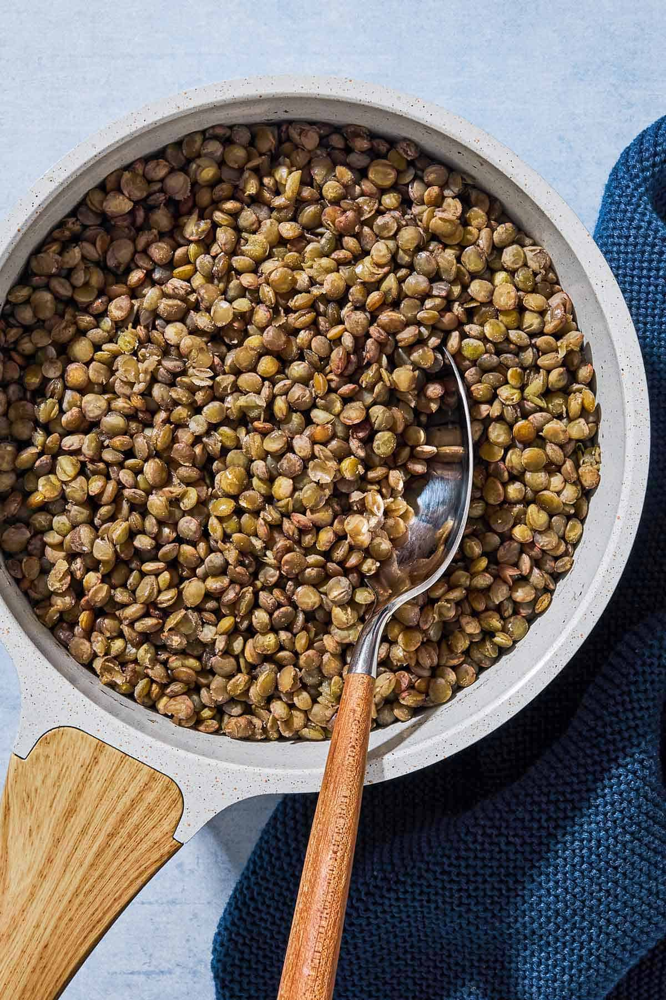

For UMD sophomore journalism major Pera Onal, her path to becoming a journalism student came from finding “a niche in a bigger school.”
Onal, an Edwardsville Illinois native, shared that her mother convincing her to be a reporter for the school newspaper during her sophomore year of high school initially led her to pursuing the career. From there, she found her footing in journalism, discovering that it fit in well with her personal life.
“It was a culmination of all of my interests,” Onal said, referencing media and communications as passions of hers that boded well for a journalism career.
Over the winter break, the journalism student said that she “felt like I was back in high school again” when she spent her days reading, swimming with her former swim team and working at her high school job.
Unlike her interest in journalism, Onal’s opinion about a certain vegetable couldn’t be swayed by her parents. The sophomore shared that lentils are her most despised vegetable and could never get around the way that her parents cooked them.